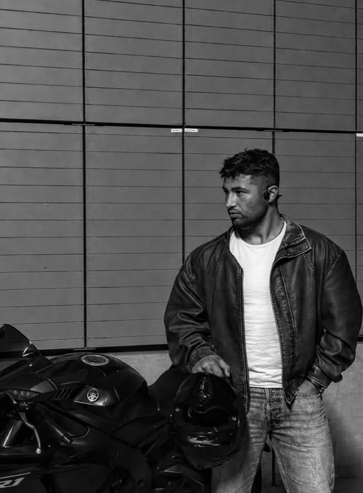

WPFW Portfolio
Welkom op mijn persoonlijke portfolio.
Wie ben ik?

Mijn naam is Mahmoud Ali. Ik ben koerd en geboren in Syrie. mijn eerste onderwijs heb ik in het Arabisch gevolgd. Daarna heb ik de middelbare school in Turkije gedaan, waar ik onderwijs in het Turks heb gevolgd.
Na mijn komst naar Nederland heb ik twee jaar het Taalschakeltraject aan De Haagse Hogeschool gevolgd. Daar heb ik Nederlands, wiskunde B en Engels geleerd. Ik heb ook het Cambridge English-examen gehaald en het vereiste niveau voor een hbo-opleiding in het Nederlands behaald.
Nu ben ik tweedejaarsstudent HBO-ICT aan De Haagse Hogeschool. Ik leer websites maken en ik vind webontwikkeling erg interessant. In deze portfolio laat ik mijn projecten en blogberichten zien.
Citaat van de dag
Laden...